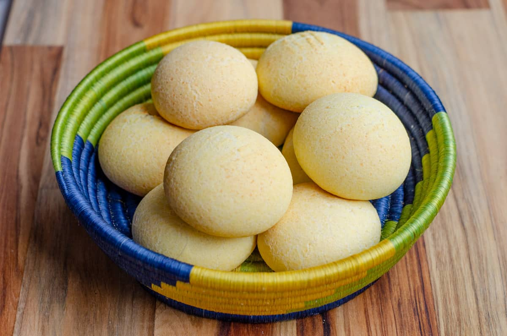

Pandebono

The pandebono is a delicious bread roll of Colombian origin, popular in the Valle del Cauca region and throughout the country.
This gluten-free bread has a golden-brown crust and a soft, chewy interior. It's known for its slightly salty and cheesy taste, offering a delightful combination of flavors. Pandebono is a beloved snack or breakfast item in Colombia, often enjoyed with a cup of coffee or hot chocolate. Its popularity extends across the country, and it's cherished for its unique texture and deliciousness.
Ingredients
- 2 cups corn flour
- 2 cups grated queso blanco or similar white cheese
- 2 eggs
- 1/4 cup starch (cassava starch or tapioca starch)
- 1 teaspoon baking powder
- 1 tablespoon sugar (optional)
- A pinch of salt
Steps
- Preheat oven (175°C)
- Mix dry ingredients, In a mixing bowl, combine the corn flour, starch, baking powder, sugar (if using), and a pinch of salt. Mix well.
- Add cheese
- Add eggs
- Shape the pandebonos
- Place on baking sheet
- Bake
- Serve warm
- Enjoy!